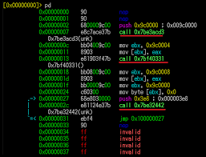

¿Qué es el Lenguaje Ensamblador
Es una representación simbólica del lenguaje máquina. Permite un mayor control sobre la arquitectura
y es más legible que el código binario. El compilador genera instrucciones específicas del procesador,
respetando su conjunto de instrucciones y las convenciones de llamada.
Tipos de Lenguaje Ensamblador
Ensamblador específico de arquitectura:
Cada procesador (como Intel, ARM, MIPS) tiene su propio conjunto de instrucciones.
Ensamblador básico:
Utiliza instrucciones simples y directas que reflejan fielmente las operaciones del hardware.
Ensamblador extendido:
Incluye macros o pseudoinstrucciones que no existen físicamente en el hardware, pero ayudan a simplificar el código.
Ejemplo de un Árbol de Expresiones
